|
Для того, чтобы правильно выбрать метод численного решения дифференциального
уравнения, сначала необходимо определить, к какому типу оно относится. Принадлежность дифференциальных уравнений
к тому или иному типу обычно определяют по двум критериям: наибольшему порядку производной и количеству
независимых переменных (см. таблицу).
| по количеству независимых переменных |
по наибольшему порядку производной |
| 1-го порядка | 2-го порядка |
| обыкновенные дифференциальные уравнения (искомая функция зависит от одной переменной - времени или координаты) |
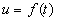 |
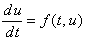 | |
| 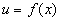 |
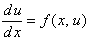 | 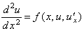 |
| дифференциальные уравнения в частных производных (искомая функция может зависеть от двух и более переменных) |
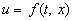 |
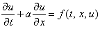 | 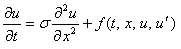 |
| 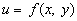 |
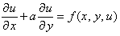 | 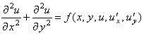 |
| 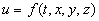 |
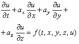 | 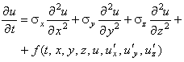 |
|
При составлении таблицы были использованы обозначения, которые также будут
применяться далее в ходе всего курса: u - искомая функция (концентрация, температура и т.д.);
t - время (независимая переменная);
x, y, z - пространственные координаты (независимые переменные);
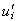 - частная производная функции u по i-й независимой переменной; а,  - константы. - константы.
Если функция u зависит от одной пространственной координаты,
то соответствующее дифференциальное уравнение называют одномерным, если от двух - двумерным, если от
трёх - трёхмерным. Двумерные и трёхмерные дифференциальные уравнения также называют многомерными.
Дифференциальные уравнения 3-го и более высоких порядков в настоящем курсе не рассматриваются.
|